Moonboon · Remote Creative Session · 24 August 2026
Sleep Score & AI Summary
“How might we integrate in/from the home a sleep score and AI summary that help parents know better what to do and reach stronger peace of mind?”
38minutes
7pitches
6tools
40+concepts
What this is
Everything that got put on the table.
One frame from the new home. Twenty minutes. Whatever tool you wanted. This is a readout of all of it — written after going back through every prototype properly, not just what fit into a five-minute demo.
Pitches are grouped by the tool they came out of rather than by name. Everyone in the room knows which one is theirs. Every idea below is somebody's.
The pitches
Seven takes on the same question.
In the order they were shown. The quotes in cream are the actual copy from the prototypes.
01Claude Design
A moon instead of a number
Started from the concise-summary idea — one line you can read at a glance, with a click-through to something longer — then pushed the AI to make the result actionable rather than informational. Twelve concepts across four rounds.
Round 1 — the score on Home
1aQuiet line — one card, one sentence, everything else behind a tap.
1bSplit — score block plus its own action block, with the streak on the surface: “3 nights in a row above 70”, “Best week since early July”.
1cEditorial — full-bleed panel with three tabs inside one block: The night · Tonight · 2 weeks. Ends with “Does this match your night? Yes / Not quite” — the only AI-accuracy feedback loop anyone designed.
Round 2 — “make it actionable”
2aToday's Three — a tickable plan under the score, showing “0 of 3 done”: cap the last nap by 4pm · start the motor before the 11pm dip · confirm the 7:45am nap. Each one carries its reason.
2bPlan for the day — suggested windows built from the last 7 days, each with an arm-able reminder. “Nap 2 · 11:15–12:30, in 2h. Longest nap of his day — worth protecting.”
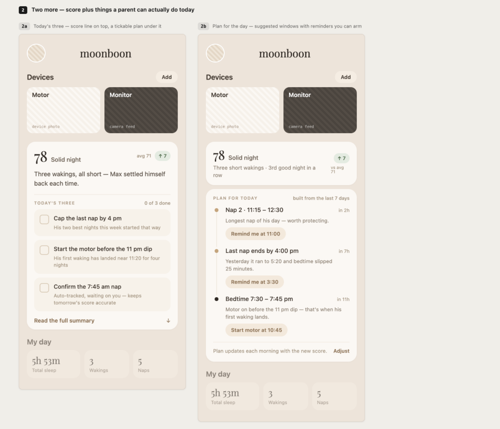
2a and 2b — the score stops being a verdict and becomes a to-do list you can arm reminders against.
Round 3 — “78 is not fun in a baby app”
3aA face, plus a week of faces you can tap to read.
3bMoon phase — fullness is the score, no digits anywhere. Fourteen moons across two weeks, and a panel titled “What would fill it further”.
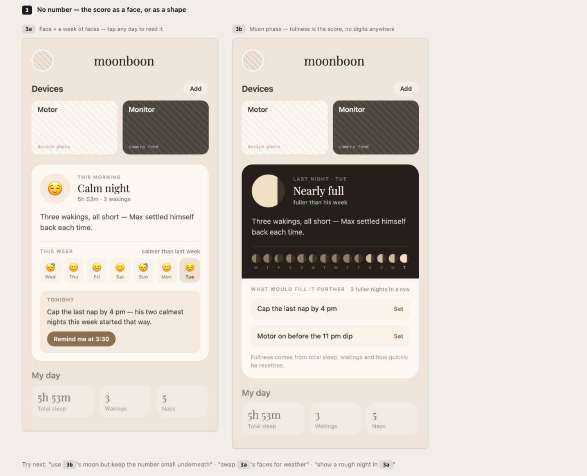
3a and 3b — a week of faces, and the moon that fills. Both end on a set-able action.
Round 4 — “go bananas”
4aNight print — every night draws a unique ring (“no. 214”), and the year quilts into a grid where warmer means calmer. You can save the print.
4bReplay the night — scrub the hours and the summary rewrites itself as you go.
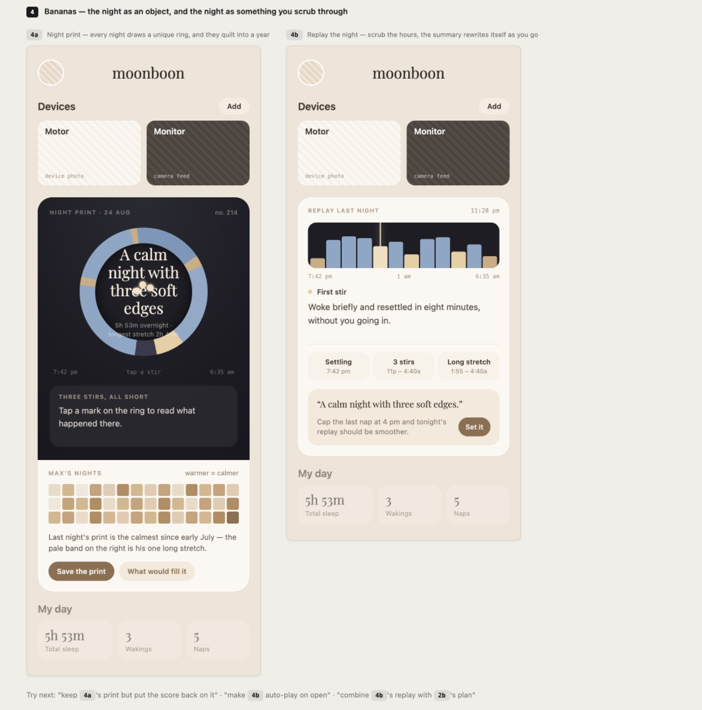
4a and 4b — the night as an object you keep, and the night as something you scrub through.
“78 is not super fun in a baby app.”
A two-week moon strip was judged too granular; the wish was something in between — a moon that reads happy, or a little tired. The Figma Make attempt was abandoned on sight. Which prompted the fair question: how can the tool with the best access to our actual designs be the worst at using them?
Deliberately small and concrete: greeting and summary on the left, score on the right, compared against the weekly average with a trend arrow so you can see it moving. Tap it and you go deeper — a four-level ladder.
Level 1 — the score plus “better or worse than usual”.
Level 2 — the five underlying scores that make it up.
Level 3 — charts across whatever period you filter for.
Level 4 — prediction history and notification history, for the parents who want it.
“More and more detail, the deeper you go down, if you are interested.”
“I kind of wonder where the 78 for your score came from — I didn't suggest anything.”
That turned out to be the sharpest observation of the session. Across every prototype built that day the models invented 78, 82, 90%, 88 and “8 of 10” — all unprompted, none agreeing. The number is currently a placeholder wearing a lab coat.
03Figma Make + Claude Design
Feed it our design system and it behaves
Two runs of the same brief. Run one — the home screen plus a paragraph of context — came out badly. Run two added the Moonboon skill as context, and it kept most of the home components in place. Same tool, same twenty minutes, completely different result.
Aura-style score with a very short description.
A menu to personalise your coaching style — how direct do you want the app to be with you.
Tap the score → why it's that number. “Show more” → the contributing metrics, broken down.
A caveat on that breakdown, said out loud: giving every contributor its own exact sub-score is probably exaggerated.
The Claude Design lo-fi run did something none of the others did — it reused the home's existing components, making the score a section of the home rather than a new thing bolted on.
“In Figma you always land with one screen and then you iterate from there. This seems better if you have a very specific context.”
All in on one tool, starting from nothing but the how-might-we sentence and the screenshots. The first pass didn't realise it had to reuse our UI, so it invented a scrollable timeline and a tappable moon. Then it got steered back into the app — and produced the widest spread of the day.
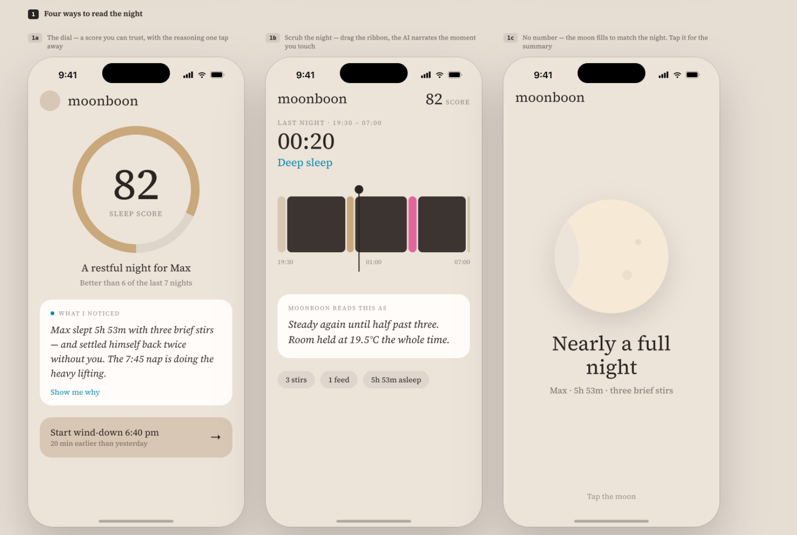
The off-brief first pass: a dial you can trust, a ribbon you drag to hear the night narrated, and a moon that fills instead of a number. Wrong UI, right questions.
Inside the real home screen
2aBy the book — the score becomes the lead stat inside “My day”, the summary is one more card.
2bScore first — a hero card above Devices that expands into its own reasoning. Carries a “Why this score” link.
2cThe AI lives in the log — insight rows sit between the naps, at the hour they happened. “Worth knowing · 04:20 — one real waking, fed and back down in six minutes.”
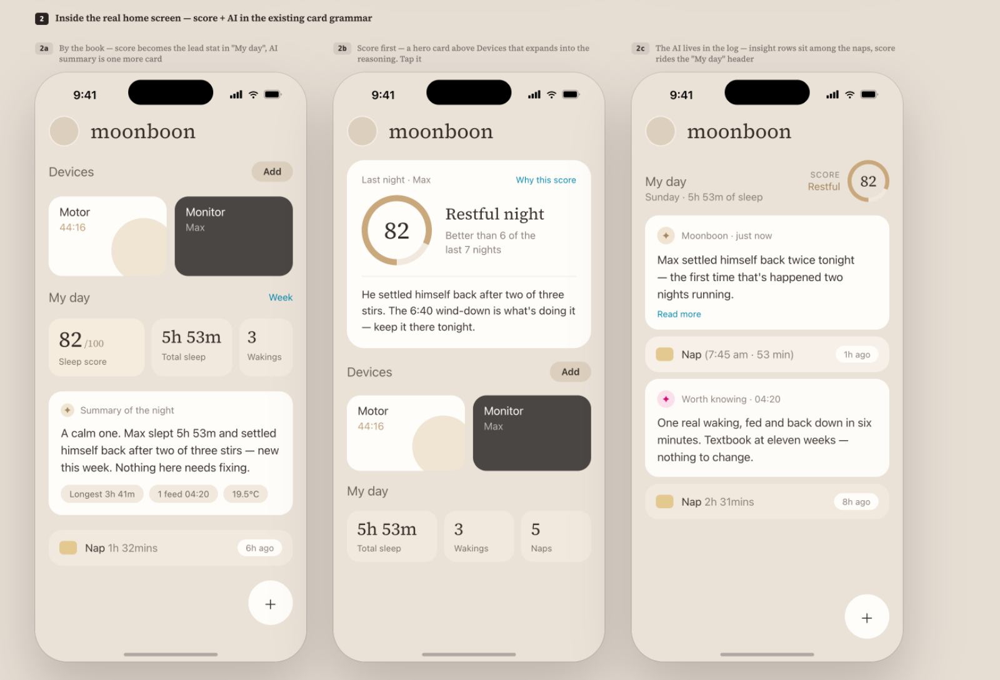
The score inside the existing card grammar — including “Ask about last night →”, a conversational way in.
Then variations on tone
3bThe summary as three plain findings, numbered 01–02–03, ending in one instruction.
3eThe log becomes a timeline spine with insights hanging off it at the hour they happened.
3fOne pinned insight, the rest folded away — with a “Not useful” button next to it.
4dThe summary signed like a note: “— moonboon, 07:04”.
4eScore as words first, the number stepping back behind the verdict.
4fA dark night recap card — the one dark surface on the sand page.
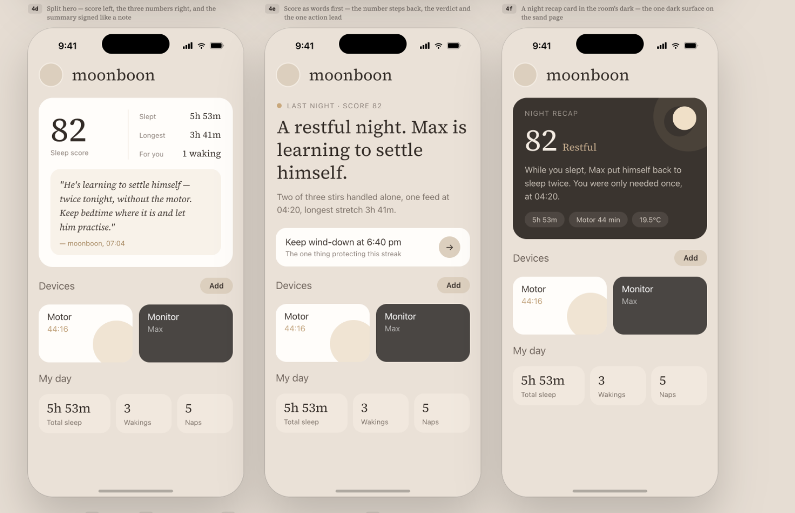
Same data, three voices. Note the third: “While you slept, Max put himself back to sleep twice. You were only needed once, at 04:20.”
And “go nuts”
The night sky. Every quiet hour is a star. Tap one and it tells you what happened. “A restful night. Only one star was yours.”
The breathing orb. It breathes at the baby's resting pace. Hold it for a breath and the night opens.
The Max Times. The night typeset as a tiny front page, made to screenshot and send. “Boy, 11 weeks, settles himself back to sleep. Twice. Parents report only one call-out; motor credited with an assist.”
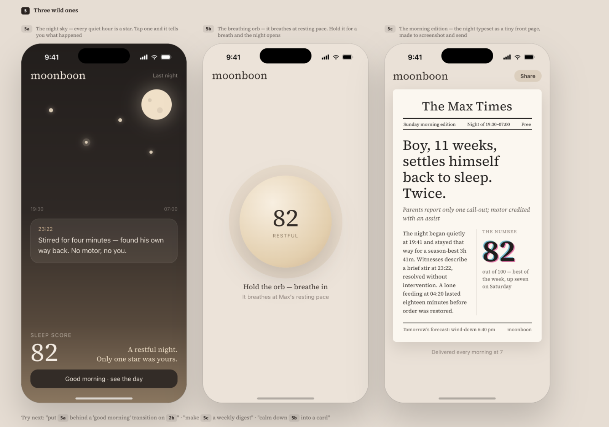
The three wild ones, side by side. All of them are live — tap, hold, drag.
“That's a nice way of zooming into the night. It's a good metaphor.”
Honest caveat from the room: the stars need a very precise finger. The metaphor survives; the hit targets don't.
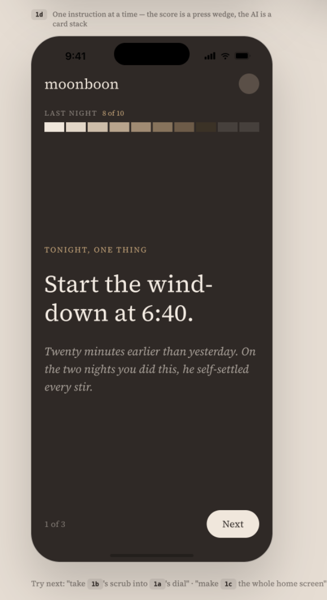
The most reduced concept of the whole session: last night as ten blocks, then one sentence. “Start the wind-down at 6:40.”Open the prototype →
05Charts & mockups
Readiness, not a report card
Not aiming at good-looking design — aiming at what the data can actually support. We know when the baby cried and how often; once motors report their actions to the backend we know that too. Both go on a timeline, with activity highlighted.
Then the reframe that changed the shape of the conversation:
“The focus was on sleep readiness — not about how the last sleep was, but how the next one will be.”
This isn't new — it came out of the design work done before the Flutter rebuild, discussed at length back then. From naps and motor actions, a readiness prediction should be derivable. And unlike a retrospective score, readiness has an obvious action attached: start a motor programme now.
It was independently reinvented on the same day. One of the design prototypes had already produced this, without anyone in the room having seen it:
SLEEP READINESS · 78 · ready for a nap now · in 20m · in 40m · in 1h — “Max has been awake 1h 40m and last night ran short. His window opens in about 15 minutes — start rocking a little early.” Start rocking · Gentle Waves · 20m
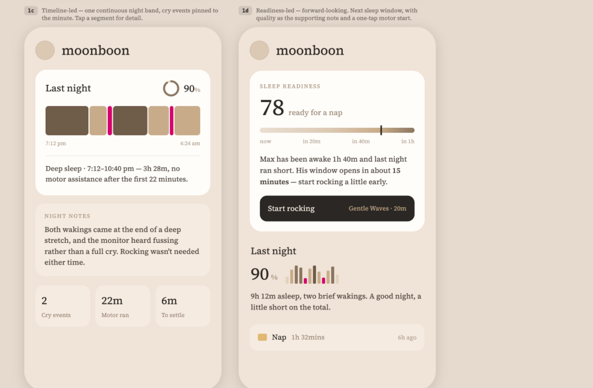
Right-hand card: the readiness pitch, drawn by a tool that had never heard it. The slider is the next sleep window, and the button under it starts the motor.
And a second one framed it as the whole point of the widget: “Two facts, one strip: quality behind you, readiness ahead of you. Rocking starts from the same row.”
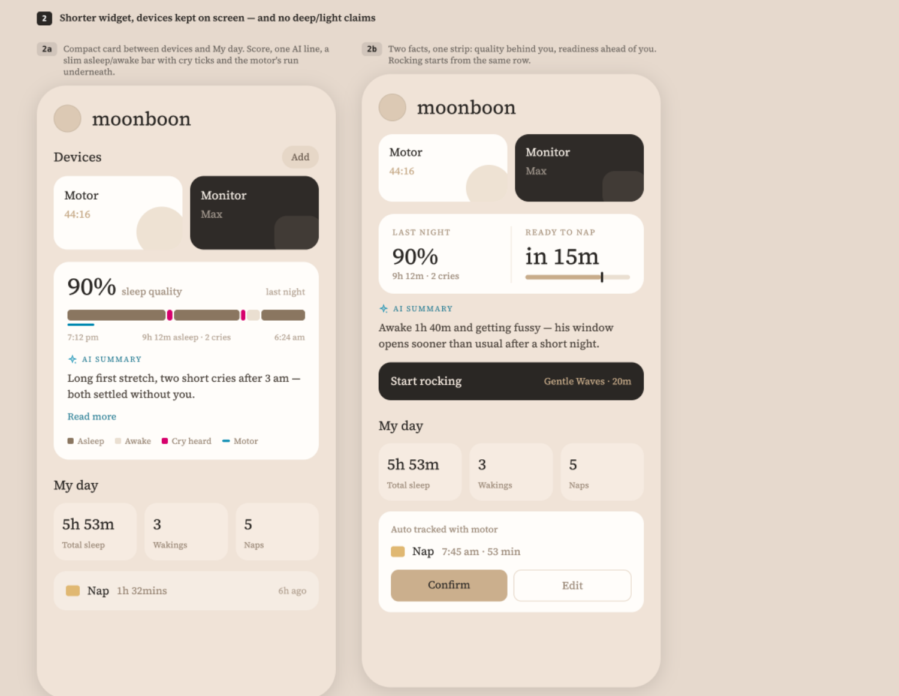
“Last night 90% · Ready to nap in 15m” — quality behind you, readiness ahead of you, and Start rocking on the same row.
Open question left in the room: is the formula real, and how precise? Marie knows the most about that.
06Google Stitch
Whose score is it, anyway?
Concept-first rather than visual-first, and the only pitch that asked a question everyone else skipped: the sleep score — for which baby?
A baby switcher at the very top of the home — Mio, Luna, Add — sitting above everything else.
The deliberately unadventurous one: less about a new idea, more about which tool gets closest to the UI we actually have. Step one was “remake this Figma frame one-to-one” — and it did, near-perfectly, fonts aside. Closest of anything tested.
From that accurate base, four variants off the same how-might-we — all of them keeping Devices on screen and slotting the score into “My day”:
AOne card — 82, “Good · +4 vs last week”, the three existing stats folded inside, then the summary and two buttons: Try earlier bedtime · More.
BRing hero — the Aura-style ring, with the follow-up collapsed into one row: “Two wakings after 3am — how to fix it ⌄”.
CEditorial — big serif 82 “out of 100”, stats reduced to one line, the summary as body copy.
DSplit — score with a 7-day sparkline, and a separate Sleep Coach block: “Move bedtime to 7:10 pm — 20 min earlier than tonight” [Try it ›].
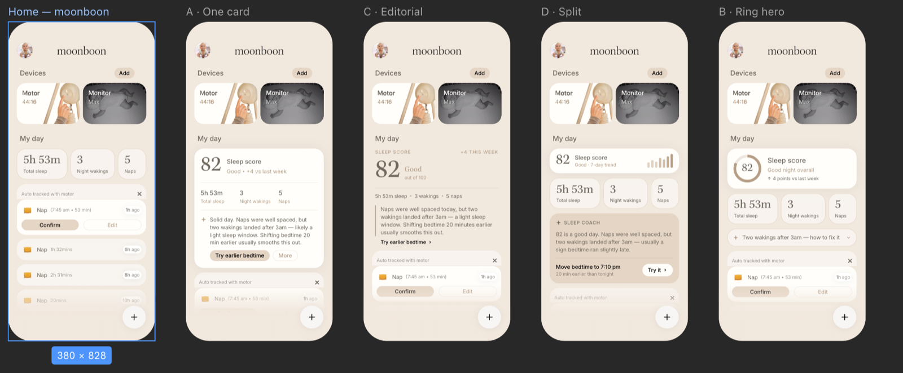
Left: the real home rebuilt 1:1. Then four ways to fit the score into it without breaking it.
Worth noting these summaries are about the day, not just the night — “Naps were well spaced, but two wakings landed after 3am”. And the tension this exposed is the most practical problem in the whole session:
“If we let this take so much space, we push the whole overview of the naps down.”
Counter-argument raised immediately: if the score and summary are what you came to find out, the raw nap list has earned its place further down. The room didn't settle it.
Different tools, different people, no coordination — these showed up anyway. That makes them worth trusting.
01
Peace of mind is “you were needed less than you think”.
This is the strongest finding in the whole corpus and nobody said it out loud in the room — it only shows up when you read the prototypes' actual copy side by side. Independently, across three different tools, the summaries stopped describing the baby and started describing the parent's night.
“Only one star was yours.” · “You were only needed once, at 04:20.” · “No motor, no you.” · “For you — 1 waking.” · “He settled himself back twice, without you going in.”
Total sleep is a fact. “You were only needed once” is relief. If the summary has one job, this is it.
Found in — 01, 03, 04, independently.
02
Permission to do nothing is a feature.
Several concepts made a point of telling the parent that nothing is wrong — “Textbook at eleven weeks. Nothing to change.” · “Nothing here needs fixing.” · “Keep bedtime where it is and let him practise.”
A score that only ever produces homework becomes a source of guilt at 3am. A score that sometimes says you're doing fine, change nothing is the one parents will keep opening.
Found in — 01, 04.
03
One line first. Depth only if you ask for it.
Every single pitch built the same ladder: a glanceable line → tap for why → tap again for the contributing metrics → charts and history at the bottom. Nobody proposed showing it all at once, and the versions that tried were rejected as “too Aura”.
Found in — all seven.
04
Every good version ends in exactly one instruction.
The moment anyone asked their tool for something “more actionable”, the output got better — and it converged hard. Not a list of advice: one thing, with its reason, that you can arm right now.
“Cap the last nap by 4 pm — his two calmest nights this week started that way.” [Remind me at 3:30] “Move bedtime to 7:10 pm — 20 min earlier than tonight.” [Try it ›] “Start rocking a little early.” [Gentle Waves · 20m]
Note where those buttons go: a reminder, or the motor. The action isn't advice — it's a thing our hardware does.
Found in — 01, 04, 05, 06, 07.
05
A bare number is wrong for a baby app.
“78 is not super fun in a baby app” landed, and kept landing: moon fullness, a week of faces, the orb, the night sky, “8 of 10”, and several concepts where the number deliberately steps back behind the verdict. The number can stay — but the thing a sleep-deprived parent sees first should feel warm, not clinical.
Found in — 01, 04, and agreed aloud by the room.
06
Embed it in the home. Don't bolt on a new section.
Every prototype that wandered off into a bespoke full-screen timeline got pulled back by hand. The versions people liked reused existing home components — replacing a stat, extending “My day”, or slipping insight rows in among the naps. One prototype set it as an explicit constraint: “devices kept on screen … nothing is pushed off screen.”
Found in — 03, 04, 07.
07
Nobody knows what the score is — and the AI is happy to guess.
Across the day the models produced 78, 82, 88, 90% and “8 of 10”, on three different scales, with no two agreeing on the contributors. One prototype quietly refused to claim deep-vs-light sleep at all — “no deep/light claims” — because our sensors can't support it. Another one showed it anyway.
That gap is the real work sitting under every design in this document.
Raised in — 02, then visible everywhere once pointed out.
Keep these alive
The wild ones we shouldn't quietly bin.
Said out loud as “probably not shippable” — but these are the only things from the session that nobody would find in a competitor teardown.
The night sky
Stars are wake-ups, laid out across the night. The room's favourite metaphor. The interaction is fiddly; the idea of zooming into a night is not. And its one line — “only one star was yours” — is the best sentence anyone wrote all day.
The night print
Every night draws a unique ring, numbered, and the year quilts into a warm grid. Turns tracking into something you'd keep rather than something you check. Also the only concept with any sentimental value.
Moon fullness as the score
Fullness is the number — no digits anywhere — with “what would fill it further” underneath. Warmer than a ring, and native to the brand in a way a percentage never will be.
Hold the orb, take a breath
It breathes at the baby's resting pace. The only concept that treats the parent as someone who might also need calming. Peace of mind as an interaction, not a data point.
The Max Times
The night as a tiny front page, built to screenshot and send. Nobody thinks we ship it — but it's the only concept designed to leave the app, and grandparents are a real audience.
Pick your coaching style
Let parents choose how direct the app is with them. Cheap to build, and it defuses the risk of an AI summary that reads as judgement.
“Does this match your night?”
A quiet Yes / Not quite under the summary. The only mechanism anyone designed for finding out whether our AI is actually right — and the cheapest training signal we'll ever get.
Readiness for the next sleep
Not a wildcard so much as a fork in the road. Arrived at twice on the same day, from opposite ends of the team. The only idea that points the score forwards instead of grading the past.
Unresolved
What we didn't answer.
Written down so they don't get quietly decided by whoever builds first.
What does the score actually measure — and on what scale?
Five contributors were sketched, but no two prototypes agreed on which five, and every number shown was invented by a model. Out of 100? A percentage? Out of ten? A moon? This is the load-bearing question under every design here.
Needs a definition before anything else
What are we allowed to claim?
One prototype explicitly refused deep/light sleep stages as unsupportable from our sensors. Another drew a full hypnogram. Same brief, same day. We need a written line on what the monitor and motor can honestly infer — cries, motion, motor runtime, temperature — and what we must not dress up as sleep science.
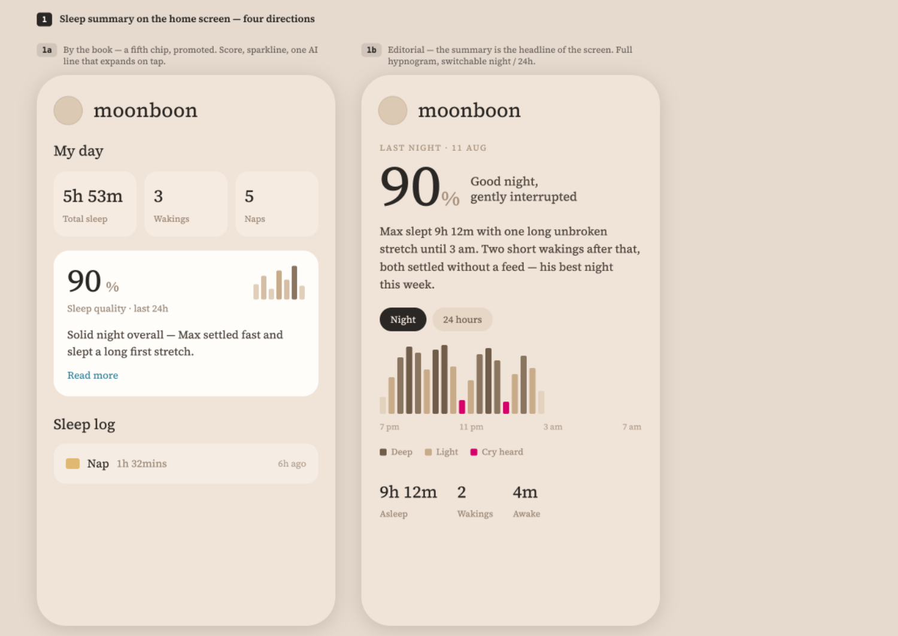
Right: “Deep · Light · Cry heard”, drawn confidently. The brief for the very next concept began “no deep/light claims”. Both are in this session.
Needs a written constraint
Is sleep readiness computable from what we have?
The belief from the earlier design work was that naps plus motor actions are enough. Nobody in the room could name the formula or vouch for its precision. Marie knows the most about this — and it changes the product if the answer is yes, because readiness has a motor start attached to it and a retrospective score doesn't.
Ask Marie
Does the summary earn its space on the home?
A score plus a summary plus an action pushes the nap overview down. Fair, if that's what people came for — unfair if it isn't. Two suggestions on the table: make it collapsible once you've read it (it's not relevant all day), or let people configure their own home screen, which is lovely and adds real complexity. Several prototypes solved it by shrinking to one tappable line at rest.
Needs a decision before build
How do multiple babies work?
Current thinking is a switcher via the baby in the top-left rather than a family overview — a few taps, but manageable. The counter: if you have two babies in the same age range you're exactly the person who switches constantly, so the cost lands on the people who feel it most. Twins are the real case; siblings are usually years apart.
Continues in Friday's conversation
What happens to the first baby?
A second baby two years later shouldn't mean wiping the first. Parents will want the history, and some will want to compare siblings at the same age. Proposal from the room: archive rather than delete, tucked away in settings — standard pattern, low cost, avoids a destructive default.
Easy win, just needs picking up
Side finding
What we learned about the tools.
Unintentionally, this was also a bake-off. The headline: context beats tool choice, by a mile.
Tool
What it did
Verdict
Paper
Rebuilt our Figma home one-to-one, near-perfectly; fonts needed a manual fix. Got closest to shippable UI of anything tested — though one person couldn't get into it inside 20 minutes.
Closest to real UI
Claude Design
Strong at lo-fi divergence and at reusing existing components when shown them. Prototypes are fully interactive, so you click through concepts rather than reading a board — and things can be copied straight out.
Best for divergence
Claude Code
Produced the widest spread by far — around twenty concepts, including every one of the wildcards above. Needs steering back toward the existing UI, repeatedly.
Best “go nuts”
Google Stitch
Good at whole flows and concept-level thinking rather than pixel fidelity. Carried a multi-screen idea end to end, and was the only one to question the single-baby assumption.
Solid for concepts
Figma Make (raw)
Abandoned on sight by one person; poor for another. The tool with the best theoretical access to our design files was the worst at respecting them.
Don't bother
Figma Make (+ Moonboon skill)
Same tool, given our design skill as context — and it held the home components in place. The single most reusable finding of the session.
Works with context
The takeaway: the difference between a useless output and a usable one was not which tool someone picked — it was whether the tool was handed our design system. That's worth making a default before the next session.
The format
How it felt in the room.
“It was a quite narrowed-down scope — it seems obvious what you would do. But there were a lot of ideas that bring us out of the box that we wouldn't have gone to without this session.”
“I liked having a bit more time. With these tools you sometimes end up with something random — having time to prompt it in the direction is good.”
“A good pretaste for a hackathon day. It shows the value we can start getting from these sessions.”
“We need to do this more often — whenever we need to build something. The team's opinion and suggestions is always nice to combine.”
“In 20 minutes you have 20 different concepts. Imagine how much we can accomplish during a hackathon.”
Someone in the room said they felt out of their depth — “I'm not a designer, I don't feel like I bring too much value.”
That pitch contained the only reframe of the entire session: score the next sleep, not the last one. Six people with six design tools all built a report card. One person who wasn't trying to design anything asked whether we were pointing the thing in the right direction at all — and by the end of the day two separate prototypes had independently agreed with him.
Which is the whole argument for doing this with the full team rather than just the design side. The tools flatten the craft gap; what's left is who has the idea.
Next
What happens with all this.
Define the score. Which contributors, what weighting, what scale, what it means. Everything above is blocked on this and nothing above answers it.
Write down what we're allowed to claim from the monitor and motor — and what we're not. One prototype already refused deep/light; another didn't.
Ask Marie about readiness. If naps plus motor actions can predict the next sleep, that's a different product than the one we were sketching — and it's the one with a motor start attached.
Settle the home real estate. Full card, collapsible after read, or configurable — pick one before anyone builds.
Carry the multi-baby thread into Friday's conversation, and pick up “archive, don't delete” as a cheap early win.
Make “give it the Moonboon skill” the default for every tool, in every session from here.
Do this again each sprint. Same shape: a narrow question, twenty unhurried minutes, any tool, five minutes each to pitch.
“It's our product, and we make it more ours as we go.”